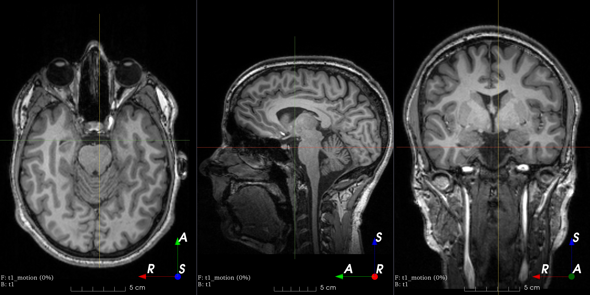
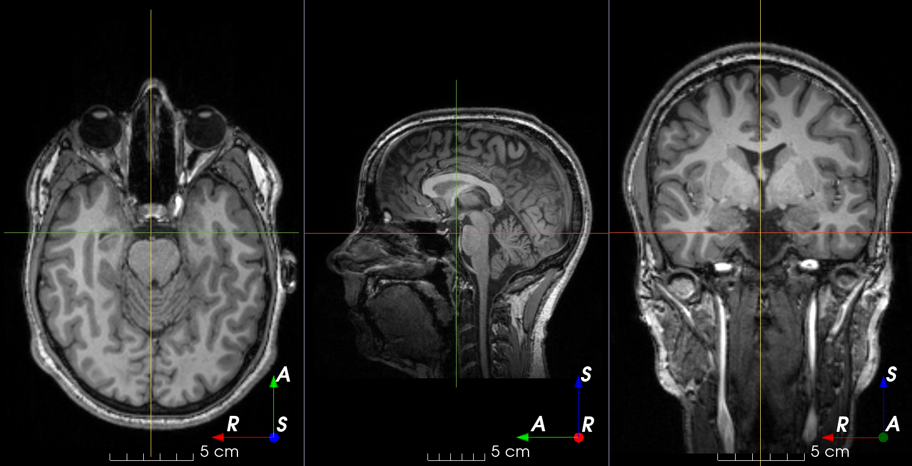
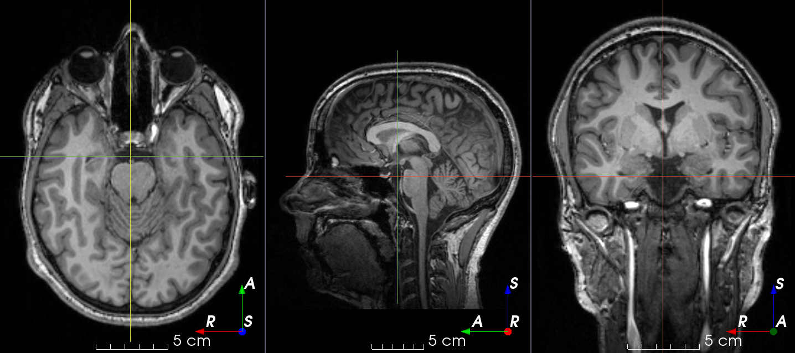
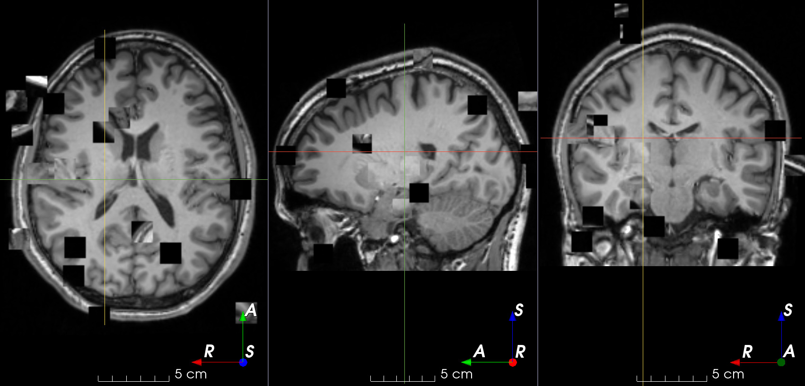

Augmentation¶
Augmentation transforms generate different results every time they are called.
The result can be made deterministic using the seed parameter.
Base class¶
RandomTransform¶
-
class
torchio.transforms.augmentation.RandomTransform(p: float = 1, seed: Optional[int] = None)[source]¶ Bases:
torchio.transforms.transform.TransformBase class for stochastic augmentation transforms.
- Parameters
p – Probability that this transform will be applied.
seed – Seed for
torchrandom number generator.
Composition¶
Compose¶
-
class
torchio.transforms.Compose(transforms: Sequence[torchio.transforms.transform.Transform], p: float = 1)[source]¶ Bases:
torchio.transforms.transform.TransformCompose several transforms together.
- Parameters
transforms – Sequence of instances of
Transform.p – Probability that this transform will be applied.
Note
This is a thin wrapper of
torchvision.transforms.Compose.
OneOf¶
-
class
torchio.transforms.OneOf(transforms: Union[dict, Sequence[torchio.transforms.transform.Transform]], p: float = 1)[source]¶ Bases:
torchio.transforms.augmentation.random_transform.RandomTransformApply only one of the given transforms.
- Parameters
transforms – Dictionary with instances of
Transformas keys and probabilities as values. Probabilities are normalized so they sum to one. If a sequence is given, the same probability will be assigned to each transform.p – Probability that this transform will be applied.
Example
>>> import torchio >>> ixi = torchio.datasets.ixi.IXITiny('ixi', download=True) >>> sample = ixi[0] >>> transforms_dict = { ... torchio.transforms.RandomAffine(): 0.75, ... torchio.transforms.RandomElasticDeformation(): 0.25, ... } # Using 3 and 1 as probabilities would have the same effect >>> transform = torchio.transforms.OneOf(transforms_dict)
Spatial¶
RandomFlip¶
-
class
torchio.transforms.RandomFlip(axes: Union[int, Tuple[int, …]] = 0, flip_probability: float = 0.5, p: float = 1, seed: Optional[int] = None)[source]¶ Bases:
torchio.transforms.augmentation.random_transform.RandomTransformReverse the order of elements in an image along the given axes.
- Parameters
axes – Axis or tuple of axes along which the image will be flipped.
flip_probability – Probability that the image will be flipped. This is computed on a per-axis basis.
p – Probability that this transform will be applied.
seed – See
RandomTransform.
Note
If the input image is 2D, all axes should be in
(0, 1).
RandomAffine¶
-
class
torchio.transforms.RandomAffine(scales: Union[float, Tuple[float, float]] = 0.9, 1.1, degrees: Union[float, Tuple[float, float]] = 10, translation: Union[float, Tuple[float, float]] = 0, isotropic: bool = False, center: str = 'image', default_pad_value: Union[str, float] = 'otsu', image_interpolation: str = 'linear', p: float = 1, seed: Optional[int] = None)[source]¶ Bases:
torchio.transforms.augmentation.random_transform.RandomTransformRandom affine transformation.
- Parameters
scales – Tuple \((a, b)\) defining the scaling magnitude. The scaling values along each dimension are \((s_1, s_2, s_3)\), where \(s_i \sim \mathcal{U}(a, b)\). For example, using
scales=(0.5, 0.5)will zoom out the image, making the objects inside look twice as small while preserving the physical size and position of the image. If only one value \(d\) is provided, \(\s_i \sim \mathcal{U}(0, d)\).degrees – Tuple \((a, b)\) defining the rotation range in degrees. The rotation angles around each axis are \((\theta_1, \theta_2, \theta_3)\), where \(\theta_i \sim \mathcal{U}(a, b)\). If only one value \(d\) is provided, \(\theta_i \sim \mathcal{U}(-d, d)\).
translation – Tuple \((a, b)\) defining the translation in mm. Translation along each axis is \((x_1, x_2, x_3)\), where \(x_i \sim \mathcal{U}(a, b)\). If only one value \(d\) is provided, \(x_i \sim \mathcal{U}(-d, d)\).
isotropic – If
True, the scaling factor along all dimensions is the same, i.e. \(s_1 = s_2 = s_3\).center – If
'image', rotations and scaling will be performed around the image center. If'origin', rotations and scaling will be performed around the origin in world coordinates.default_pad_value – As the image is rotated, some values near the borders will be undefined. If
'minimum', the fill value will be the image minimum. If'mean', the fill value is the mean of the border values. If'otsu', the fill value is the mean of the values at the border that lie under an Otsu threshold.image_interpolation – See Interpolation.
p – Probability that this transform will be applied.
seed – See
RandomTransform.
Example
>>> import torchio >>> subject = torchio.datasets.Colin27() >>> transform = torchio.RandomAffine( ... scales=(0.9, 1.2), ... degrees=(10), ... isotropic=False, ... default_pad_value='otsu', ... image_interpolation='bspline', ... ) >>> transformed = transform(subject)
From the command line:
$ torchio-transform t1.nii.gz RandomAffine --kwargs "degrees=30 default_pad_value=minimum" --seed 42 affine_min.nii.gz
RandomElasticDeformation¶

-
class
torchio.transforms.RandomElasticDeformation(num_control_points: Union[int, Tuple[int, int, int]] = 7, max_displacement: Union[float, Tuple[float, float, float]] = 7.5, locked_borders: int = 2, image_interpolation: str = 'linear', p: float = 1, seed: Optional[int] = None)[source]¶ Bases:
torchio.transforms.augmentation.random_transform.RandomTransformApply dense random elastic deformation.
A random displacement is assigned to a coarse grid of control points around and inside the image. The displacement at each voxel is interpolated from the coarse grid using cubic B-splines.
The ‘Deformable Registration’ topic on ScienceDirect contains useful articles explaining interpolation of displacement fields using cubic B-splines.
- Parameters
num_control_points – Number of control points along each dimension of the coarse grid \((n_x, n_y, n_z)\). If a single value \(n\) is passed, then \(n_x = n_y = n_z = n\). Smaller numbers generate smoother deformations. The minimum number of control points is
4as this transform uses cubic B-splines to interpolate displacement.max_displacement – Maximum displacement along each dimension at each control point \((D_x, D_y, D_z)\). The displacement along dimension \(i\) at each control point is \(d_i \sim \mathcal{U}(0, D_i)\). If a single value \(D\) is passed, then \(D_x = D_y = D_z = D\). Note that the total maximum displacement would actually be \(D_{max} = \sqrt{D_x^2 + D_y^2 + D_z^2}\).
locked_borders – If
0, all displacement vectors are kept. If1, displacement of control points at the border of the coarse grid will also be set to0. If2, displacement of control points at the border of the image will also be set to0.image_interpolation – See Interpolation. Note that this is the interpolation used to compute voxel intensities when resampling using the dense displacement field. The value of the dense displacement at each voxel is always interpolated with cubic B-splines from the values at the control points of the coarse grid.
p – Probability that this transform will be applied.
seed – See
RandomTransform.
This gist can also be used to better understand the meaning of the parameters.
This is an example from the 3D Slicer registration FAQ.

To generate a similar grid of control points with TorchIO, the transform can be instantiated as follows:
>>> from torchio import RandomElasticDeformation >>> transform = RandomElasticDeformation( ... num_control_points=(7, 7, 7), # or just 7 ... locked_borders=2, ... )
Note that control points outside the image bounds are not showed in the example image (they would also be red as we set
locked_bordersto2).Warning
Image folding may occur if the maximum displacement is larger than half the coarse grid spacing. The grid spacing can be computed using the image bounds in physical space 1 and the number of control points:
>>> import numpy as np >>> import SimpleITK as sitk >>> image = sitk.ReadImage('my_image.nii.gz') >>> image.GetSize() (512, 512, 139) # voxels >>> image.GetSpacing() (0.76, 0.76, 2.50) # mm >>> bounds = np.array(image.GetSize()) * np.array(image.GetSpacing()) array([390.0, 390.0, 347.5]) # mm >>> num_control_points = np.array((7, 7, 6)) >>> grid_spacing = bounds / (num_control_points - 2) >>> grid_spacing array([78.0, 78.0, 86.9]) # mm >>> potential_folding = grid_spacing / 2 >>> potential_folding array([39.0, 39.0, 43.4]) # mm
Using a
max_displacementlarger than the computedpotential_foldingwill raise aRuntimeWarning.- 1
Technically, \(2 \epsilon\) should be added to the image bounds, where \(\epsilon = 2^{-3}\) according to ITK source code.
RandomDownsample¶

-
class
torchio.transforms.RandomDownsample(axes: Union[int, Tuple[int, …]] = 0, 1, 2, downsampling: Union[float, Tuple[float, float]] = 1.5, 5, p: float = 1, seed: Optional[int] = None)[source]¶ Bases:
torchio.transforms.augmentation.random_transform.RandomTransformDownsample an image along an axis.
This transform simulates an image that has been acquired using anisotropic spacing, using downsampling with nearest neighbor interpolation.
- Parameters
axes – Axis or tuple of axes along which the image will be downsampled.
downsampling – Downsampling factor \(m \gt 1\). If a tuple \((a, b)\) is provided then \(m \sim \mathcal{U}(a, b)\).
p – Probability that this transform will be applied.
seed – See
RandomTransform.
Example
>>> from torchio import RandomDownsample >>> from torchio.datasets import Colin27 >>> transform = RandomDownsample(axes=1, downsampling=2.) # Multiply spacing of second axis by 2 >>> transform = RandomDownsample( ... axes=(0, 1, 2), downsampling=(2, 5) ... ) # Multiply spacing of one of the 3 axes by a factor randomly chosen in [2, 5] >>> colin = Colin27 >>> transformed = transform(colin) # images have now anisotropic spacing
Intensity¶
RandomMotion¶
Magnetic resonance images suffer from motion artifacts when the subject moves during image acquisition. This transform follows Shaw et al., 2019 to simulate motion artifacts for data augmentation.
-
class
torchio.transforms.RandomMotion(degrees: float = 10, translation: float = 10, num_transforms: int = 2, image_interpolation: str = 'linear', p: float = 1, seed: Optional[int] = None)[source]¶ Bases:
torchio.transforms.augmentation.random_transform.RandomTransformAdd random MRI motion artifact.
Custom implementation of Shaw et al. 2019, MRI k-Space Motion Artefact Augmentation: Model Robustness and Task-Specific Uncertainty.
- Parameters
degrees – Tuple \((a, b)\) defining the rotation range in degrees of the simulated movements. The rotation angles around each axis are \((\theta_1, \theta_2, \theta_3)\), where \(\theta_i \sim \mathcal{U}(a, b)\). If only one value \(d\) is provided, \(\theta_i \sim \mathcal{U}(-d, d)\). Larger values generate more distorted images.
translation – Tuple \((a, b)\) defining the translation in mm of the simulated movements. The translations along each axis are \((t_1, t_2, t_3)\), where \(t_i \sim \mathcal{U}(a, b)\). If only one value \(t\) is provided, \(t_i \sim \mathcal{U}(-t, t)\). Larger values generate more distorted images.
num_transforms – Number of simulated movements. Larger values generate more distorted images.
image_interpolation – See Interpolation.
p – Probability that this transform will be applied.
seed – See
RandomTransform.
Warning
Large numbers of movements lead to longer execution times for 3D images.
RandomGhosting¶
Discrete “ghost” artifacts may occur along the phase-encode direction whenever the position or signal intensity of imaged structures within the field-of-view vary or move in a regular (periodic) fashion. Pulsatile flow of blood or CSF, cardiac motion, and respiratory motion are the most important patient-related causes of ghost artifacts in clinical MR imaging (from mriquestions.com).
-
class
torchio.transforms.RandomGhosting(num_ghosts: Union[int, Tuple[int, int]] = 4, 10, axes: Union[int, Tuple[int, …]] = 0, 1, 2, intensity: Union[float, Tuple[float, float]] = 0.5, 1, restore: float = 0.02, p: float = 1, seed: Optional[int] = None)[source]¶ Bases:
torchio.transforms.augmentation.random_transform.RandomTransformAdd random MRI ghosting artifact.
- Parameters
num_ghosts – Number of ‘ghosts’ \(n\) in the image. If
num_ghostsis a tuple \((a, b)\), then \(n \sim \mathcal{U}(a, b) \cap \mathbb{N}\). If only one value \(d\) is provided, \(\n \sim \mathcal{U}(0, d) \cap \mathbb{N}\).axes – Axis along which the ghosts will be created. If
axesis a tuple, the axis will be randomly chosen from the passed values.intensity – Positive number representing the artifact strength \(s\) with respect to the maximum of the \(k\)-space. If
0, the ghosts will not be visible. If a tuple \((a, b)\) is provided then \(s \sim \mathcal{U}(a, b)\). If only one value \(d\) is provided, \(\s \sim \mathcal{U}(0, d)\).restore – Number between
0and1indicating how much of the \(k\)-space center should be restored after removing the planes that generate the artifact.p – Probability that this transform will be applied.
seed – See
RandomTransform.
Note
The execution time of this transform does not depend on the number of ghosts.
RandomSpike¶
Also known as Herringbone artifact, crisscross artifact or corduroy artifact, it creates stripes in different directions in image space due to spikes in k-space.
-
class
torchio.transforms.RandomSpike(num_spikes: Union[int, Tuple[int, int]] = 1, intensity: Union[float, Tuple[float, float]] = 1, 3, p: float = 1, seed: Optional[int] = None)[source]¶ Bases:
torchio.transforms.augmentation.random_transform.RandomTransformAdd random MRI spike artifacts.
- Parameters
num_spikes – Number of spikes \(n\) present in k-space. If a tuple \((a, b)\) is provided, then \(n \sim \mathcal{U}(a, b) \cap \mathbb{N}\). If only one value \(d\) is provided, \(\n \sim \mathcal{U}(0, d) \cap \mathbb{N}\). Larger values generate more distorted images.
intensity – Ratio \(r\) between the spike intensity and the maximum of the spectrum. If a tuple \((a, b)\) is provided, then \(r \sim \mathcal{U}(a, b)\). If only one value \(d\) is provided, \(\r \sim \mathcal{U}(-d, d)\). Larger values generate more distorted images.
p – Probability that this transform will be applied.
seed – See
RandomTransform.
Note
The execution time of this transform does not depend on the number of spikes.
RandomBiasField¶
MRI magnetic field inhomogeneity creates intensity variations of very low frequency across the whole image.
The bias field is modelled as a linear combination of polynomial basis functions, as in K. Van Leemput et al., 1999, Automated model-based tissue classification of MR images of the brain.
It was implemented in NiftyNet by Carole Sudre and used in Sudre et al., 2017, Longitudinal segmentation of age-related white matter hyperintensities.
-
class
torchio.transforms.RandomBiasField(coefficients: Union[float, Tuple[float, float]] = 0.5, order: int = 3, p: float = 1, seed: Optional[int] = None)[source]¶ Bases:
torchio.transforms.augmentation.random_transform.RandomTransformAdd random MRI bias field artifact.
- Parameters
coefficients – Magnitude \(n\) of polynomial coefficients. If a tuple \((a, b)\) is specified, then \(n \sim \mathcal{U}(a, b)\).
order – Order of the basis polynomial functions.
p – Probability that this transform will be applied.
seed – See
RandomTransform.
RandomBlur¶
-
class
torchio.transforms.RandomBlur(std: Union[float, Tuple[float, float]] = 0, 4, p: float = 1, seed: Optional[int] = None)[source]¶ Bases:
torchio.transforms.augmentation.random_transform.RandomTransformBlur an image using a random-sized Gaussian filter.
- Parameters
std – Tuple \((a, b)\) to compute the standard deviations \((\sigma_1, \sigma_2, \sigma_3)\) of the Gaussian kernels used to blur the image along each axis, where \(\sigma_i \sim \mathcal{U}(a, b)\) mm. If only one value \(d\) is provided, \(\sigma_i \sim \mathcal{U}(0, d)\).
p – Probability that this transform will be applied.
seed – See
RandomTransform.
RandomNoise¶
Adds noise sampled from a normal distribution with mean 0 and standard
deviation sampled from a uniform distribution in the range std_range.
It is often used after ^torchio.transforms.ZNormalization,
because its output has zero-mean.
-
class
torchio.transforms.RandomNoise(mean: Union[float, Tuple[float, float]] = 0, std: Union[float, Tuple[float, float]] = 0, 0.25, p: float = 1, seed: Optional[int] = None)[source]¶ Bases:
torchio.transforms.augmentation.random_transform.RandomTransformAdd random Gaussian noise.
- Parameters
mean – Mean \(\mu\) of the Gaussian distribution from which the noise is sampled. If two values \((a, b)\) are provided, then \(\mu \sim \mathcal{U}(a, b)\). If only one value \(d\) is provided, \(\mu \sim \mathcal{U}(-d, d)\).
std – Standard deviation \(\sigma\) of the Gaussian distribution from which the noise is sampled. If two values \((a, b)\) are provided, then \(\sigma \sim \mathcal{U}(a, b)\). If only one value \(d\) is provided, \(\sigma \sim \mathcal{U}(0, d)\).
p – Probability that this transform will be applied.
seed – See
RandomTransform.
RandomSwap¶
Randomly swaps patches in the image. This is typically used in context restoration for self-supervised learning.
-
class
torchio.transforms.RandomSwap(patch_size: Union[int, Tuple[int, int, int]] = 15, num_iterations: int = 100, p: float = 1, seed: Optional[int] = None)[source]¶ Bases:
torchio.transforms.augmentation.random_transform.RandomTransformRandomly swap patches within an image.
- Parameters
patch_size – Tuple of integers \((d, h, w)\) to swap patches of size \(d \times h \times w\). If a single number \(n\) is provided, \(d = h = w = n\).
num_iterations – Number of times that two patches will be swapped.
p – Probability that this transform will be applied.
seed – See
RandomTransform.
RandomLabelsToImage¶
-
class
torchio.transforms.RandomLabelsToImage(label_key: Optional[str] = None, pv_label_keys: Optional[Sequence[str]] = None, image_key: str = 'image', gaussian_parameters: Optional[Dict[Union[str, int, float], Dict[str, Union[float, Tuple[float, float]]]]] = None, default_mean: Union[float, Tuple[float, float]] = 0.1, 0.9, default_std: Union[float, Tuple[float, float]] = 0.01, 0.1, discretize: bool = False, p: float = 1, seed: Optional[int] = None)[source]¶ Bases:
torchio.transforms.augmentation.random_transform.RandomTransformGenerate an image from a segmentation.
Based on the work by Billot et al., A Learning Strategy for Contrast-agnostic MRI Segmentation.
- Parameters
label_key – String designating the label map in the sample that will be used to generate the new image. Cannot be set at the same time as
pv_label_keys.pv_label_keys – Sequence of strings designating the partial-volume label maps in the sample that will be used to generate the new image. Cannot be set at the same time as
label_key.image_key – String designating the key to which the new volume will be saved. If this key corresponds to an already existing volume, voxels that have a value of 0 in the label maps will be filled with the corresponding values in the original volume.
gaussian_parameters – Dictionary containing the mean and standard deviation for each label. For each value \(v\), if a tuple \((a, b)\) is provided then \(v \sim \mathcal{U}(a, b)\). If no value is given for a label,
default_meananddefault_stdranges will be used.default_mean – Default mean range.
default_std – Default standard deviation range.
discretize – If
True, partial-volume label maps will be discretized. Does not have any effects if not using partial-volume label maps. Discretization is done taking the class of the highest value per voxel in the different partial-volume label maps usingtorch.argmax()on the channel dimension (i.e. 0).p – Probability that this transform will be applied.
seed – See
RandomTransform.
Note
It is recommended to blur the new images to make the result more realistic. See
RandomBlur.Example
>>> import torchio >>> from torchio import RandomLabelsToImage, DATA, RescaleIntensity, Compose >>> from torchio.datasets import Colin27 >>> colin = Colin27(2008) >>> # Using the default gaussian_parameters >>> transform = RandomLabelsToImage(label_key='cls') >>> # Using custom gaussian_parameters >>> label_values = colin['cls'][DATA].unique().round().long() >>> gaussian_parameters = { ... label: { ... 'mean': i / len(label_values), ... 'std': 0.01 ... } ... for i, label in enumerate(label_values) ... } >>> transform = RandomLabelsToImage(label_key='cls', gaussian_parameters=gaussian_parameters) >>> transformed = transform(colin) # colin has a new key 'image' with the simulated image >>> # Filling holes of the simulated image with the original T1 image >>> rescale_transform = RescaleIntensity((0, 1), (1, 99)) # Rescale intensity before filling holes >>> simulation_transform = RandomLabelsToImage( ... label_key='cls', ... image_key='t1', ... gaussian_parameters={0: {'mean': 0, 'std': 0}} ... ) >>> transform = Compose([rescale_transform, simulation_transform]) >>> transformed = transform(colin) # colin's key 't1' has been replaced with the simulated image